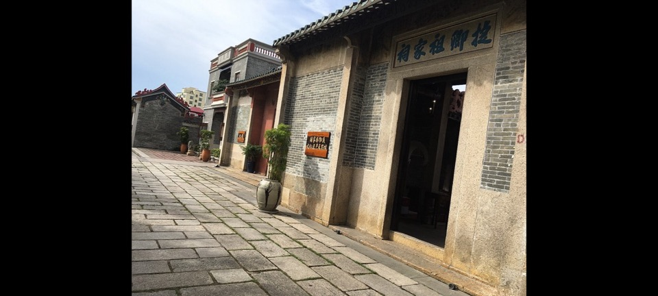

适合谁
适合建筑、地方史和社区观察者；参观时须尊重居民、宗教礼仪与生产秩序。

SHENZHEN GUIDE · 126
福永 · 历史村落
凤凰古村位于福永凤凰社区，祠堂、古井、石巷和仍在使用的民居保存岭南村落格局，适合与凤凰山分开慢看而非只作登山通道。现场的空间线索集中在文氏宗祠群和石板古巷，把两者连起来看，才不会只剩一个笼统印象。阅读这处地点要把文氏宗祠群与石板古巷放回仍在使用的街巷或社区中，不把历史空间当成布景。先看公开区域，再按居民生活、礼仪和开放边界调整停留，不进入封闭建筑。
WHY GO
适合建筑、地方史和社区观察者；参观时须尊重居民、宗教礼仪与生产秩序。
把凤凰古村拆成两段：先看文氏宗祠群，有余力再看石板古巷；若开放范围与旧攻略不一致，以现场标识为准。
公共交通先到福永凤凰社区片区，再以凤凰古村公开参观入口为终点；多入口地点须按计划游线选择入口，并预先锁定返程站点。
车辆停在凤凰古村外围正规公共停车场后步行进入；不驶入窄巷，不占居民门口、作业区或消防通道。
10 月至次年 4 月步行较舒适；夏季避开正午，雨天留意石板、台阶和老建筑周边湿滑。
NEARBY IDEAS